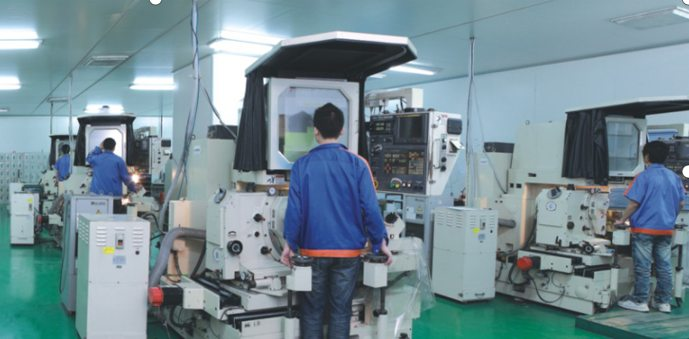

Technical Blog
What is PG Grinding?
A practical guide for purchasing managers, mechanical engineers and quality engineers evaluating profile grinding for carbide punches, formed edges and high-accuracy mold components.

Overview
PG grinding usually refers to profile grinding, a precision grinding process used to create accurate formed profiles, cutting edges and complex shapes in hard materials. In many Japanese manufacturing contexts, PG grinding is associated with high-accuracy optical profile grinding and CNC profile grinding equipment. For mold components, connector punches, carbide inserts and micro blades, PG grinding is valuable because it can shape hard materials while controlling contour accuracy and surface condition.
Process Principles
Unlike general surface grinding, PG grinding focuses on the profile. The required shape is often generated from drawing data or film, then ground into a punch, insert or blade feature. This makes the process suitable for small formed edges, irregular contours and profiles that are difficult to create by ordinary milling. WAIDA PGX-2500SP equipment, for example, is used in precision shops for demanding profile work where shape consistency matters.
Application Fit
PG grinding is often selected for tungsten carbide and hardened steel parts. These materials are difficult to machine with conventional cutters, especially when small details and sharp transitions are required. Grinding can process hard materials with better control of edge shape and surface finish. For a connector punch or precision stamping insert, the profile may directly affect product quality, burr control and tool life. This is why buyers should pay close attention to the supplier's PG grinding experience.
Drawing and RFQ Requirements
A typical PG grinding RFQ should include a 2D drawing with profile tolerance, material, hardness, blade length, edge condition, surface roughness and quantity. If the component is part of a larger assembly, a 3D model helps the supplier understand function and interference risks. The supplier then reviews whether the profile can be ground directly, whether wire EDM is needed before grinding, and what inspection method should be used.
Tolerance Review
Tolerance depends on part size, material and profile complexity. Jinyi Precision lists PG grinding reference capability around ±0.002mm for suitable features, with a reference minimum R0.03 and surface roughness reference Ra0.05-Ra0.15. These values are useful for early supplier screening, but final confirmation should always be based on the actual drawing and measurement method.
Combined Process Planning
PG grinding often works together with other processes. Wire EDM may cut the blank or rough profile. Mirror EDM may process features that grinding cannot reach. Surface grinding may control thickness or flatness. Optical projection inspection may confirm the formed profile. A supplier with multiple processes can evaluate the whole manufacturing path instead of forcing every feature into one machine.
Repeatability for Production Tooling
For international buyers, one of the biggest advantages of PG grinding is repeatable profile control. If a precision component has a small blade, punch form or non-standard contour, small deviations can cause assembly problems or product defects. PG grinding allows the supplier to focus process attention on that critical profile. This is especially important for connector manufacturers, mold manufacturers and precision stamping companies.
Cost and Lead Time
Cost is influenced by profile complexity, grinding time, material hardness, inspection requirements and quantity. A simple profile may be straightforward, while a micro feature with strict surface finish and multiple datum relationships requires more engineering review. Buyers should not evaluate cost only by part size. The time spent on setup, profile preparation and inspection can be more important than material volume.
Quality Control and Inspection
Quality inspection for PG grinding may involve projector inspection, height gauge measurement, microscope review and surface roughness measurement. The inspection method should match the drawing. If the drawing shows a profile tolerance but does not define how it is measured, the supplier and buyer should clarify this before production. Clear inspection agreement helps avoid disputes in overseas projects.
Conclusion
In summary, PG grinding is a precision process for formed profiles, carbide components, punches, inserts and mold parts where shape accuracy matters. It is not a general substitute for CNC machining, but it is often the correct choice for hard materials and small precision profiles. Buyers should send complete drawings and ask the supplier about equipment, profile experience, tolerance confirmation and inspection capability.
How to Prepare a PG Grinding Drawing
A PG grinding drawing should show the functional profile clearly and separate critical geometry from reference geometry. Identify the datum, profile tolerance, included angles, radii, straight sections, relief areas and the surface finish required on working edges. If the component mates with a connector terminal, mold insert or another punch, explain which surfaces control the fit. A 2D PDF is essential for tolerances, while STEP or STP data helps the supplier understand the three-dimensional relationship between features.
Material condition is equally important. State the carbide or tool-steel grade, hardness, heat-treatment status and any coating requirement. Sharp corners, very thin sections and long unsupported profiles may increase chipping or distortion risk, so they should be reviewed before production. For repeat orders, include the expected annual quantity and whether replacement parts must remain interchangeable with earlier batches. This information helps the supplier define grinding stock, process sequence and inspection points.
Before approving production, buyers should confirm how the finished profile will be verified. Optical projection is useful for comparing complex outlines, while height gauges, microscopes and other instruments may be used for dimensions that are not fully represented by the projected contour. Agreeing on datum orientation and measurement method prevents different interpretations of the same drawing and makes acceptance criteria clearer for both engineering and quality teams.
Sampling and Repeat-Order Control
For a new PG grinding component, the first sample should establish more than a single dimensional result. The buyer and supplier should confirm the drawing revision, material lot or grade, datum setup, projected profile orientation and the measurement method used for each critical feature. If a coating will be applied, the inspection plan should state whether the working profile is accepted before coating, after coating or at both stages.
Repeat orders benefit from a controlled reference. Keep the approved drawing, inspection method and any agreed profile overlay or limit sample linked to the part number and revision. Replacement punches or inserts may need to remain interchangeable with components already in service, so a changed datum interpretation can matter even when each individual dimension appears acceptable. Documenting these points does not guarantee performance by itself, but it gives purchasing, engineering and quality teams a consistent basis for comparing future batches.
Need Help With a Precision Component?
For a PG grinding review, send the dimensioned profile, material grade, quantity, datum definition and critical tolerance requirements. The engineering review can then address grinding stock, edge condition, optical inspection and any wire EDM or surface-grinding steps.
RFQ Request
Send drawings for review
Please include material, quantity, tolerance, surface requirement and target delivery date in the form. Please send PDF, STEP, STP, DWG or DXF drawings by Email or WhatsApp after submitting the RFQ form.